Your codebase, explained
in one video.
A free Claude Code plugin. It maps every step your code takes, checks each one against the source, and animates it as agents working, chats answering and requests being checked. Every scene traces back to a line of code.
> /plugin marketplace add faizankhan789/codebase-flow-video > /plugin install codebase-flow-video@codebase-flow-video
Then, in any project: “Make a video of how this codebase works.” A GitHub link or a website works too. Needs Node 18+ and ffmpeg.
Rendered by the plugin itself, from a storyboard. Music is generated for each video.
From one line of code to one scene
Before anything is animated, Claude writes FLOW.md: every pipeline, step and branch, with the file, the line and the exact code. A script rejects any quote that is not at that line. Only then does a step become a scene.
13const limit = settings.autoRefundLimit;
14if (refund.amount <= limit) {
15 return approve(refund);
17return askManager(refund);
B2.4b over the limit: a manager approves first
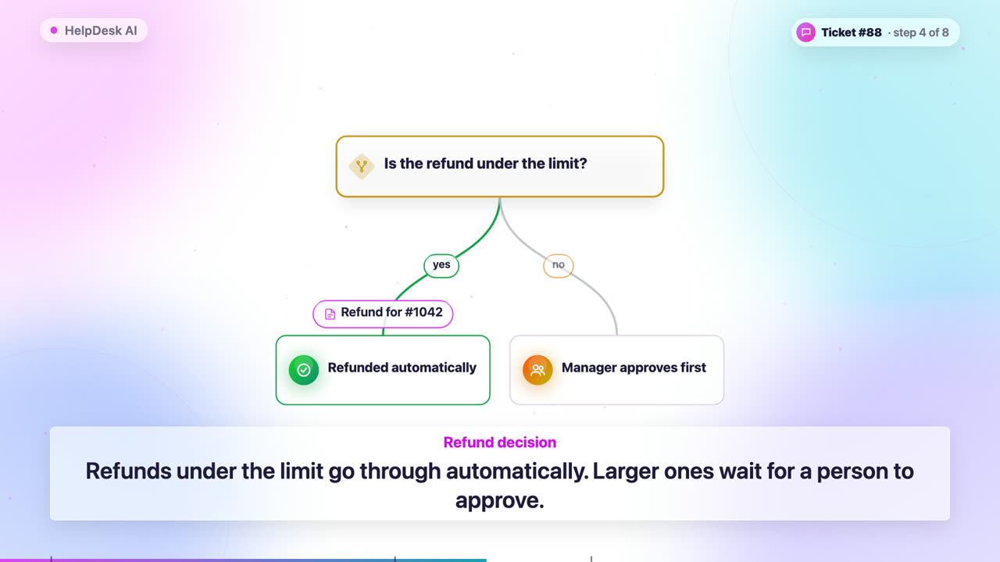
One storyboard, every screen
Each video renders in 16:9, 1:1 and 9:16 at once. Backgrounds are white by default; switch to dark or your brand colour and every card, icon and glow adjusts. Nothing is ever cut by the frame: the render stops if anything would be.

Scenes picked from what your code does
An agent system gets agents at work. A RAG app gets a chat with its sources. An API gets a request being checked. The order of the video follows the code too, so no two repos get the same film.
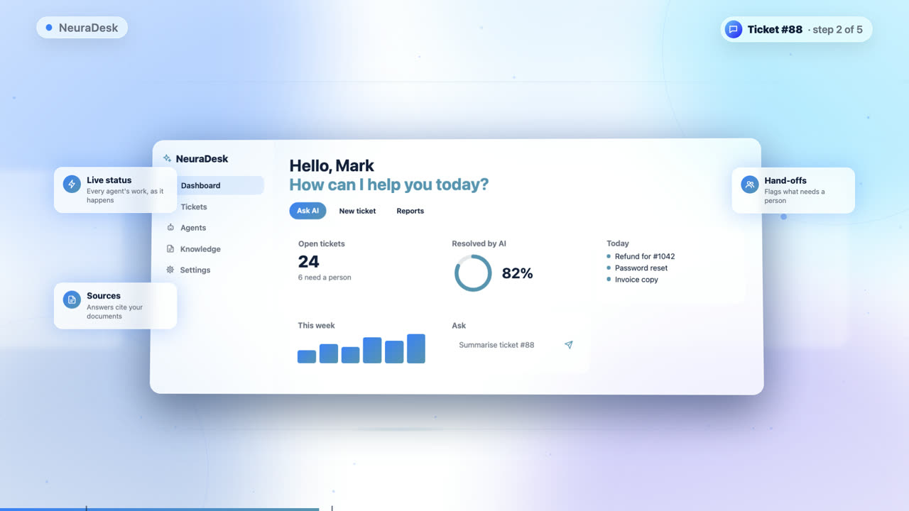
Showcase
Your product in a 3D glass window, with callouts around it.
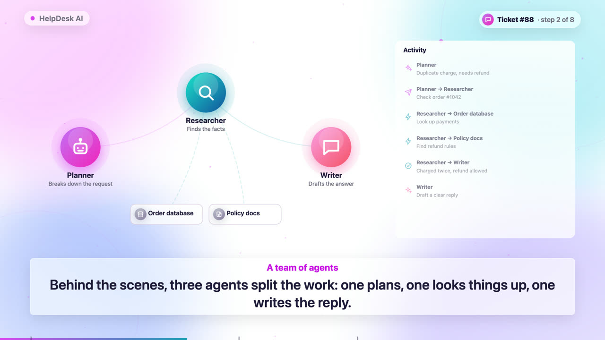
Agents
Planners, researchers, tool calls and handoffs, step by step.
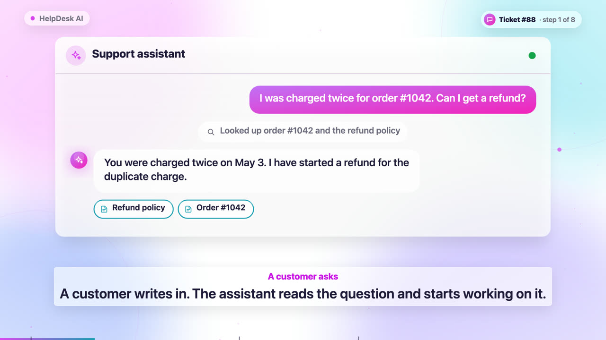
Chat
Typing, streamed answers and the sources behind them.
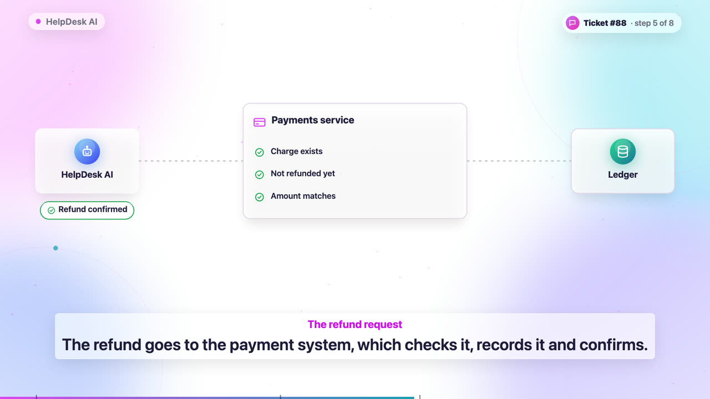
Request
An API call checked, saved and answered.
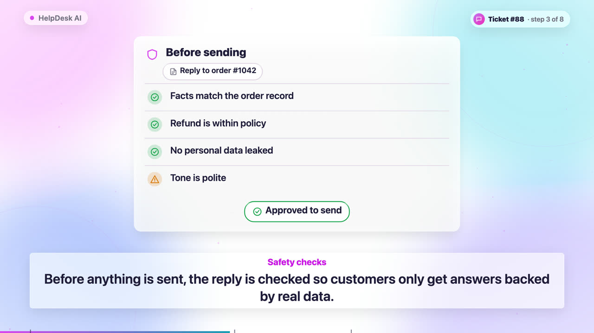
Checklist
Validations, fraud rules and guardrails.
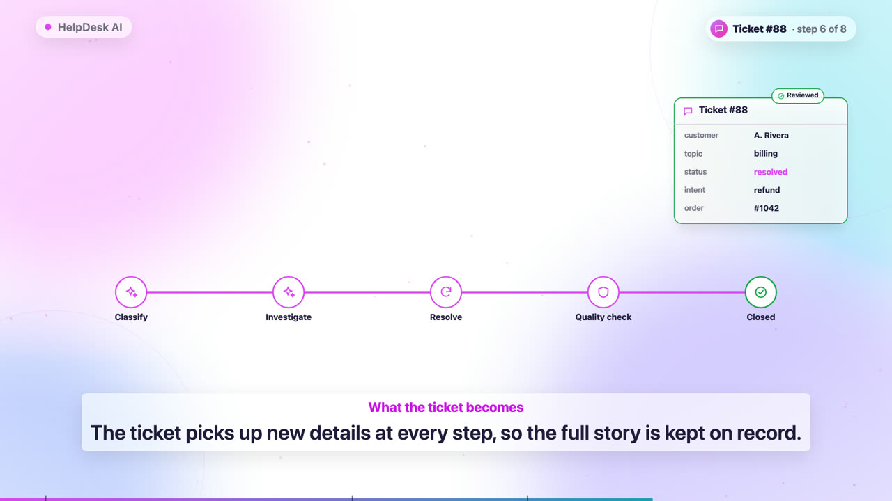
Pipeline
One record changing as it moves through each stage.
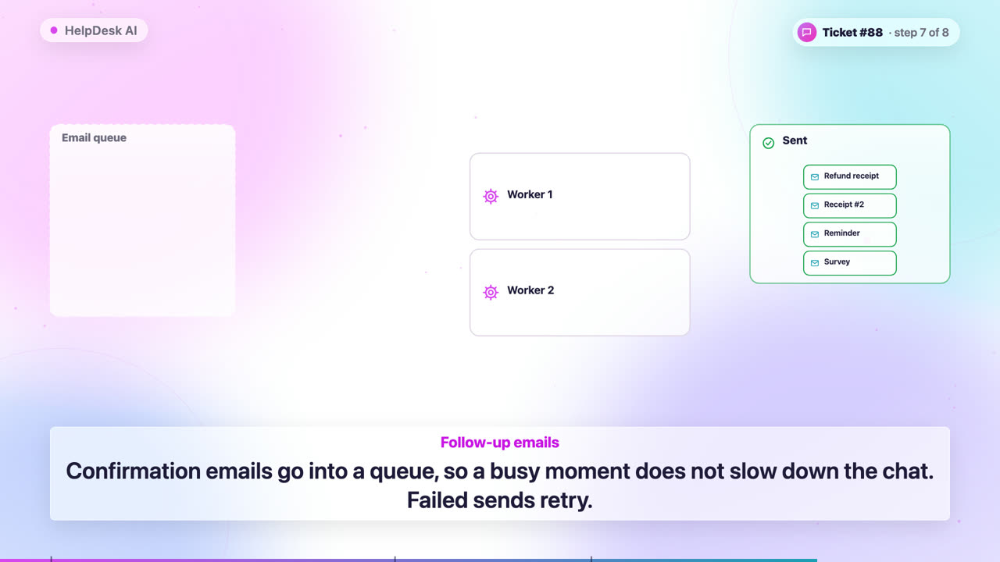
Queue
Background jobs, workers and retries.
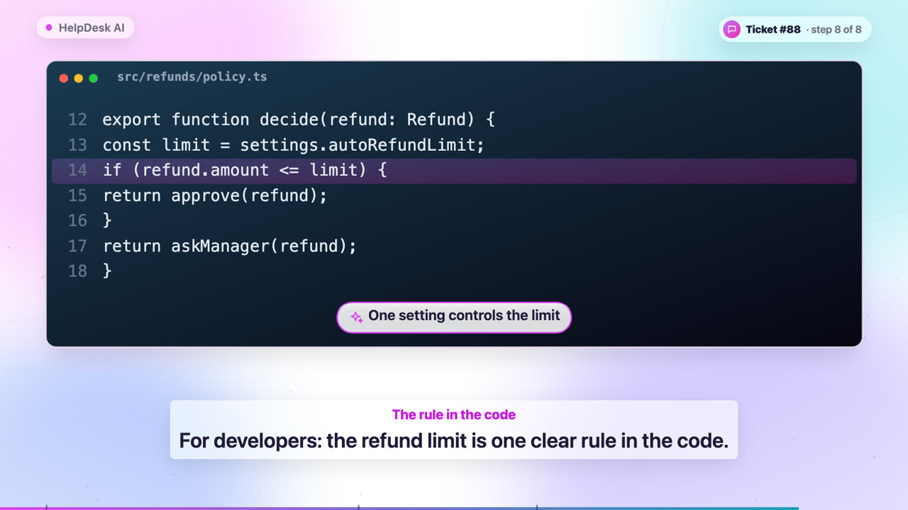
Code
The one rule developers should see, copied from the repo.
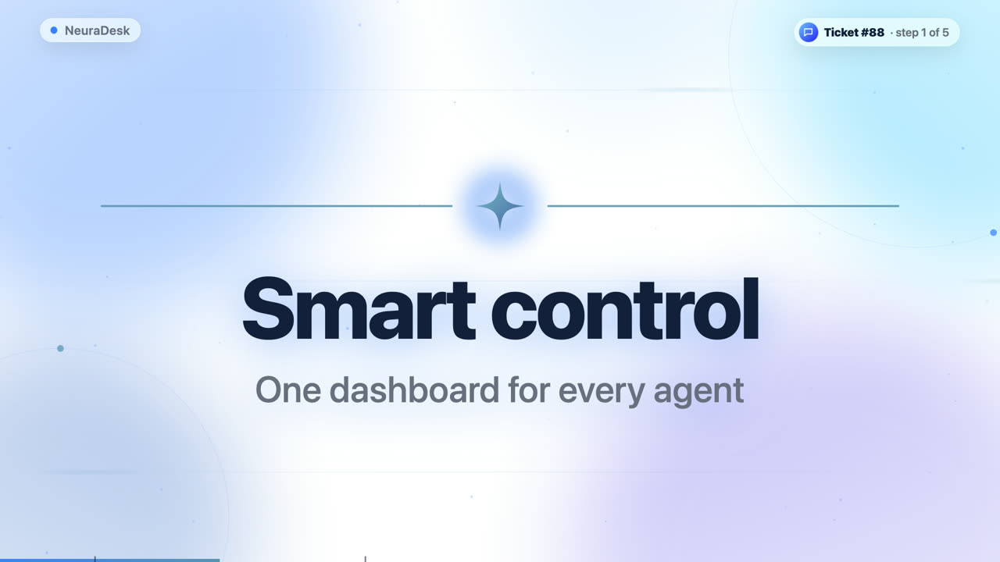
Headline
Section titles with an emblem and light lines.
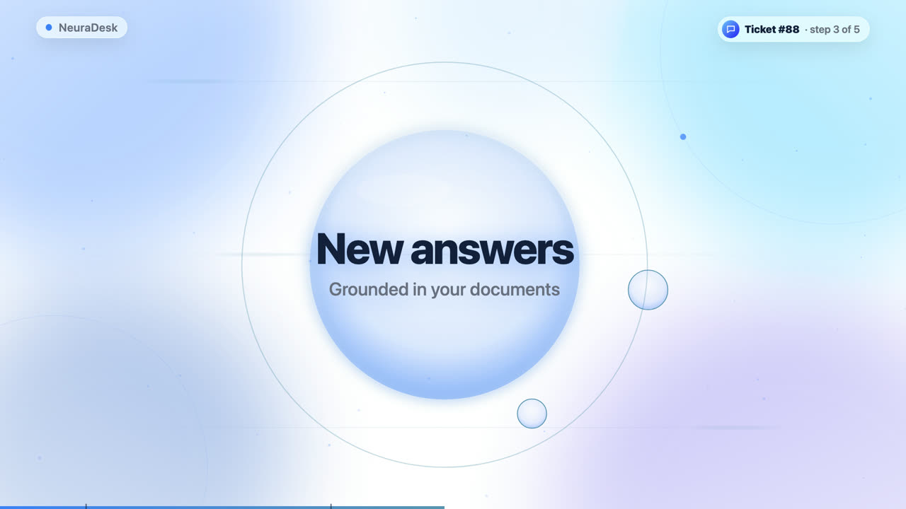
Orb
A softer title for the next chapter of the story.
Real screenshots of your running app can join too, with highlights measured from the page.
Accuracy first, then story, then motion
- Graph the codeTree-sitter indexes 11 languages. Claude asks “who calls this?” instead of reading whole files, so large repos stay cheap.
- Map every step
FLOW.mdlists each pipeline, step and branch withfile:lineand the exact code. - Check every claimA script confirms each file, line and quote. A fresh reviewer agent checks what they mean.
- Animate the storyPlain-language scenes in your brand, with original music, in three formats, plus a post to share.
Built not to make things up
The video can only be as accurate as the map, and the map can only claim what the code shows.
file:line and the exact code. Anything that does not match is rejected.It looks like your product
It reads your brand colours and fonts from Tailwind, CSS, theme files, Android, Flutter or iOS, then picks a style for your domain.
Make the video of your codebase
Free and MIT licensed. Runs wherever Claude Code runs: the CLI, VS Code, JetBrains, the desktop app and the web.
> /plugin marketplace add faizankhan789/codebase-flow-video > /plugin install codebase-flow-video@codebase-flow-video